Symmetry-Adapted Perturbation Theory¶
Symmetry-adapted perturbation theory (SAPT) provides a means of directly computing the noncovalent interaction between two molecules, that is, the interaction energy is determined without computing the total energy of the monomers or dimer. In addition, SAPT provides a decomposition of the interaction energy into physically meaningful components: i.e., electrostatic, exchange, induction, and dispersion terms. In SAPT, the Hamiltonian of the dimer is partitioned into contributions from each monomer and the interaction.
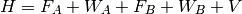
Here, the Hamiltonian is written as a sum of the usual monomer Fock
operators, 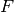, the fluctuation potential of each monomer,  , and the
interaction potential, 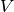. The monomer Fock operators, 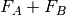, are
treated as the zeroth-order Hamiltonian and the interaction energy is
evaluated through a perturbative expansion of , 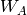, and 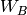.
Through first-order in , electrostatic and exchange interactions are
included; induction and dispersion first appear at second-order in . For
a complete description of SAPT, the reader is referred to the excellent
review by Jeziorski, Moszynski, and Szalewicz [Jeziorski:1994:1887].
, and the
interaction potential, 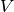. The monomer Fock operators, 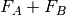, are
treated as the zeroth-order Hamiltonian and the interaction energy is
evaluated through a perturbative expansion of , 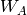, and 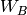.
Through first-order in , electrostatic and exchange interactions are
included; induction and dispersion first appear at second-order in . For
a complete description of SAPT, the reader is referred to the excellent
review by Jeziorski, Moszynski, and Szalewicz [Jeziorski:1994:1887].
Several truncations of the SAPT expansion are available in the SAPT module of |PSIfour|. The simplest truncation of SAPT is denoted SAPT0.
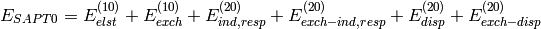
In this notation, 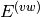 defines the order in and in 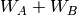; the
subscript,  , indicates that orbital relaxation effects are included.
, indicates that orbital relaxation effects are included.
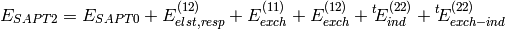
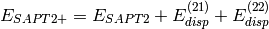
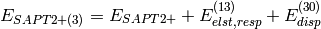
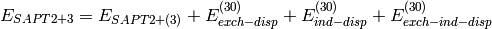
A thorough analysis of the performance of these truncations of SAPT can be found in a review by Hohenstein and Sherrill [Hohenstein:2012:WIREs].
The SAPT module relies entirely on the density-fitting approximation of the two-electron integrals. The factorization of the SAPT energy expressions, as implemented in |PSIfour|, assumes the use of density-fitted two-electron integrals, therefore, the SAPT module cannot be run with exact integrals. In practice, we have found that the density-fitting approximation introduces negligable errors into the SAPT energy and greatly improves efficiency.
A First Example¶
The following is the simplest possible input that will perform all available SAPT computations (normally, you would pick one of these methods).
molecule water_dimer {
0 1
O -1.551007 -0.114520 0.000000
H -1.934259 0.762503 0.000000
H -0.599677 0.040712 0.000000
--
0 1
O 1.350625 0.111469 0.000000
H 1.680398 -0.373741 -0.758561
H 1.680398 -0.373741 0.758561
units angstrom
no_reorient
symmetry c1
}
set globals {
basis aug-cc-pvdz
}
energy('sapt0')
energy('sapt2')
energy('sapt2+')
energy('sapt2+(3)')
energy('sapt2+3')
The SAPT module uses the standard |PSIfour| partitioning of the dimer into monomers. Additionally, the no_reorient flag must be included and the use of spatial symmetry disabled by setting the molecule option symmetry c1. A final note is that the SAPT module is only capable of performing SAPT comuptations for interactions between closed-shell singlets.
The example input shown above would not be used in practice. To exploit the efficiency of the density-fitted SAPT implementation in |PSIfour|, the SCF computations should also be performed with density-fitted (DF) integrals.
set globals {
basis aug-cc-pvdz
df_basis_scf aug-cc-pvdz-jkfit
df_basis_sapt aug-cc-pvdz-ri
guess sad
scf_type df
}
set sapt {
print 1
}
These options will perform the SAPT computation with DF-HF and a superposition-of-atomic-densities guess. This is the preferred method of running the SAPT module.
SAPT0¶
Generally speaking, SAPT0 should be applied to large systems or large data sets. The performance of SAPT0 relies entirely on error cancellation, which seems to be optimal with a truncated aug-cc-pVDZ basis, namely, jun-cc-pVDZ (which we have referred to in previous work as aug-cc-pVDZ’). The SAPT module has been used to perform SAPT0 computations with over 200 atoms and 2800 basis functions; this code should be scalable to 4000 basis functions. Publications resulting from the use of the SAPT0 code should cite the following publications: [Hohenstein:2010:184111] and [Hohenstein:2011:174107].
Basic SAPT0 Keywords¶
- SAPT_LEVEL
The level of theory for SAPT.
- Type: string
- Possible Values: SAPT0, SAPT2, SAPT2+, SAPT2+3
- Default: SAPT0
- BASIS
The basis set used to describe the monomer molecular orbitals.
- Type: string
- Possible Values: Basis Sets
- Default: none
- DF_BASIS_SAPT
The fitting basis to use for all two-electron integrals in the SAPT computation. |PSIfour| will attempt to pick a reasonable fitting basis if one is not provided.
- Type: string
- Default: none
- DF_BASIS_ELST
Optionally, a different fitting basis can be used for the
 and
and  terms.
This may be important if heavier elements are involved.
terms.
This may be important if heavier elements are involved.- Type: string
- Default: none
- FREEZE_CORE
Sets the number of core orbitals to freeze in the evaluation of the
 and
and  terms. It is recommended to freeze core in all SAPT computations.
terms. It is recommended to freeze core in all SAPT computations.- Type: string
- Possible Values: TRUE, FALSE, SMALL, LARGE
- Default: FALSE
- D_CONVERGENCE
Convergence of the residual of the CPHF coefficients needed for the
 .
.- Type: `conv double`_
- Default:

- E_CONVERGENCE
Convergence of the energy change in the
term during the solution of the CPHF equations (in hartrees).- Type: `conv double`_
- Default:

- MAXITER
The maximum number of CPHF iterations.
- Type: integer
- Default: 50
The print level for the SAPT module. If set to 0, only the header and final results are printed. If set to 1, some intermediate quantities are also printed. For large SAPT computations, it is advisable to set to 1 so the progress of the computation can be tracked.
- Type: integer
- Default: 1
Advanced SAPT0 Keywords¶
- AIO-CPHF
Do disk I/O asynchronously during the solution of the CPHF equations. This option may speed up the computation slightly, however its use will cause |PSIfour| to spawn an additional thread.
- Type: `boolean`_
- Default: FALSE
- AIO_DF_INTS
Do disk I/O asynchronously during the formation of the DF integrals. This option may speed up the computation slightly, however its use will cause |PSIfour| to spawn an additional thread.
- Type: `boolean`_
- Default: FALSE
- NO_RESPONSE
Don’t solve the CPHF equations, evaluate
 and
and  instead of their response-including
counterparts. Only turn on this option if you are not going to
use the induction energy.
instead of their response-including
counterparts. Only turn on this option if you are not going to
use the induction energy.- Type: `boolean`_
- Default: FALSE
- INTS_TOLERANCE
All three-index DF integrals and those contributing to four-index integrals that fall below this Schwarz bound will be neglected. The default is very conservative, however, there isn’t much to gain from loosening it.
- Type: `conv double`_
- Default:

- DENOMINATOR_DELTA
The SAPT module uses approximate energy denominators for most of the
and evaluation.
This option controls the maximum allowable error norm in the energy
denominator tensor.- Type: double
- Default:

- DENOMINATOR_ALGORITHM
Should the energy denominators be approximated with Laplace transformations or a Cholesky decomposition? We have found Laplace transformations to be slightly more efficient.
- Type: string
- Possible Values: LAPLACE, CHOLESKY
- Default: LAPLACE
- SAPT_OS_SCALE
The SAPT module will print a decomposition of the
and terms into same-spin and opposite-spin
contributions, in analogy to the SCS-MP2 method of Stefan Grimme. This
option controls the scaling of the opposite-spin contributions.- Type: double
- Default: 6/5
- SAPT_SS_SCALE
This option controls the scaling of the same-spin contributions.
- Type: double
- Default: 1.0/3.0
- DEBUG
Print lots of intermediate quantities that are not usually interesting. For SAPT, it will also do additional work (which is not optimized for large systems) so don’t turn it on.
- Type: integer
- Default: 0
Higher-Order SAPT¶
For smaller systems (up to the size of a nucleic acid base pair), more accurate interaction energies can be obtained through higher-order SAPT computations. The SAPT module can perform density-fitted evaluations of SAPT2, SAPT2+, SAPT2+(3), and SAPT2+3 energies. Publications resulting from the use of the higher-order SAPT code should cite the following: [Hohenstein:2010:014101].
A brief note on memory usage: the higher-order SAPT code assumes that certain quantities can be held in core. This code requires sufficient memory to hold 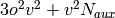 arrays in core. With this requirement computations on the adenine-thymine complex can be performed with an aug-cc-pVTZ basis in less than 64GB of memory.
Higher-order SAPT is treated separately from the higly optimized SAPT0 code, therefore, higher-order SAPT uses a separate set of keywords. The following keywords are relevant for higher-order SAPT.
Basic Keywords for Higher-order SAPT¶
Skipped for mock-up.
Advanced Keywords for Higher-order SAPT¶
Skipped for mock-up.
MP2 Natural Orbitals¶
One of the unique features of the SAPT module is its ability to use MP2 natural orbitals (NOs) to speed up the evaluation of the triples contribution to disperison. By transforming to the MP2 NO basis, we can throw away virtual orbitals that are expected to contribute little to the dispersion energy. Speedups in excess of are possible. In practice, this approximation is very good and should always be applied. Publications resulting from the use of MP2 NO-based approximations should cite the following: [Hohenstein:2010:104107].
Basic Keywords Controlling MP2 NO Approximations¶
Skipped for mock-up.
Advanced Keywords Controlling MP2 NO Approximations¶
Skipped for mock-up.
Charge-Transfer in SAPT¶
It is possible to obtain the stabilization energy of a complex due to charge-transfer effects from a SAPT computation. The charge-transfer energy can be computed with the SAPT module as described by Stone and Misquitta [Misquitta:2009:201].
Charge-transfer energies can be obtained from the following calls to the energy function.
energy('sapt0-ct')
energy('sapt2-ct')
energy('sapt2+-ct')
energy('sapt2+(3)-ct')
energy('sapt2+3-ct')
A SAPT charge-transfer analysis will perform 5 HF computations: the dimer in the dimer basis, monomer A in the dimer basis, monomer B in the dimer basis, monomer A in the monomer A basis, and monomer B in the monomer B basis. Next, it performs two SAPT computations, one in the dimer basis and one in the monomer basis. Finally, it will print a summary of the charge-transfer results:
SAPT Charge Transfer Analysis
-----------------------------------------------------------------------------
SAPT Induction (Dimer Basis) -2.0970 mH -1.3159 kcal mol^-1
SAPT Induction (Monomer Basis) -1.1396 mH -0.7151 kcal mol^-1
SAPT Charge Transfer -0.9574 mH -0.6008 kcal mol^-1
These results are for the water dimer geometry shown above computed with SAPT0/aug-cc-pVDZ.
Interpreting SAPT Results¶
We will examine the results of a SAPT2+3/aug-cc-pVDZ computation on the water dimer. This computation can be performed with the following input:
molecule water_dimer {
0 1
O -1.551007 -0.114520 0.000000
H -1.934259 0.762503 0.000000
H -0.599677 0.040712 0.000000
--
0 1
O 1.350625 0.111469 0.000000
H 1.680398 -0.373741 -0.758561
H 1.680398 -0.373741 0.758561
units angstrom
no_reorient
symmetry c1
}
set globals {
basis aug-cc-pvdz
guess sad
scf_type df
}
set sapt {
print 1
nat_orbs true
freeze_core true
}
energy('sapt2+3')
To reiterate some of the options mentioned above: the NAT_ORBS option will compute MP2 natural orbitals and use them in the evaluation of the triples correction to dispersion, and the FREEZE_CORE option will freeze the core throughout the SAPT computation. This SAPT2+3/aug-cc-pVDZ computation produces the following results:
SAPT Results
--------------------------------------------------------------------------
Electrostatics -13.06429805 mH -8.19797114 kcal mol^-1
Elst10,r -13.37543274 mH -8.39321111 kcal mol^-1
Elst12,r 0.04490253 mH 0.02817676 kcal mol^-1
Elst13,r 0.26623216 mH 0.16706321 kcal mol^-1
Exchange 13.41793548 mH 8.41988199 kcal mol^-1
Exch10 11.21823471 mH 7.03954885 kcal mol^-1
Exch10(S^2) 11.13803867 mH 6.98922508 kcal mol^-1
Exch11(S^2) 0.04558910 mH 0.02860760 kcal mol^-1
Exch12(S^2) 2.15411167 mH 1.35172554 kcal mol^-1
Induction -3.91333155 mH -2.45565272 kcal mol^-1
Ind20,r -4.57531220 mH -2.87105187 kcal mol^-1
Ind30,r -4.91715479 mH -3.08556135 kcal mol^-1
Ind22 -0.83761074 mH -0.52560870 kcal mol^-1
Exch-Ind20,r 2.47828867 mH 1.55514969 kcal mol^-1
Exch-Ind30,r 4.33916816 mH 2.72286924 kcal mol^-1
Exch-Ind22 0.45370482 mH 0.28470409 kcal mol^-1
delta HF,r (2) -1.43240211 mH -0.89884593 kcal mol^-1
delta HF,r (3) -0.85441547 mH -0.53615383 kcal mol^-1
Dispersion -3.62061213 mH -2.27196851 kcal mol^-1
Disp20 -3.54292109 mH -2.22321664 kcal mol^-1
Disp30 0.05959981 mH 0.03739945 kcal mol^-1
Disp21 0.11216179 mH 0.07038259 kcal mol^-1
Disp22 (SDQ) -0.17924270 mH -0.11247650 kcal mol^-1
Disp22 (T) -0.47692549 mH -0.29927528 kcal mol^-1
Est. Disp22 (T) -0.54385253 mH -0.34127263 kcal mol^-1
Exch-Disp20 0.64545652 mH 0.40503010 kcal mol^-1
Exch-Disp30 -0.01823411 mH -0.01144207 kcal mol^-1
Ind-Disp30 -0.91816995 mH -0.57616037 kcal mol^-1
Exch-Ind-Disp30 0.76459013 mH 0.47978757 kcal mol^-1
Total HF -5.68662366 mH -3.56841037 kcal mol^-1
Total SAPT0 -8.58408823 mH -5.38659691 kcal mol^-1
Total SAPT2 -6.72339084 mH -4.21899163 kcal mol^-1
Total SAPT2+ -7.26739725 mH -4.56036082 kcal mol^-1
Total SAPT2+(3) -6.94156528 mH -4.35589816 kcal mol^-1
Total SAPT2+3 -7.11337921 mH -4.46371303 kcal mol^-1
At the bottom of this output are the total SAPT energies (defined above),
they are composed of subsets of the individual terms printed above. The
individual terms are grouped according to the component of the interaction
to which they contribute. The total component energies (i.e.,
electrostatics, exchange, induction, and dispersion) represent what we
regard as the best estimate available at a given level of SAPT computed
from a subset of the terms of that grouping. The groupings shown above are
not unique and are certainly not rigorously defined. We regard the groupings
used in |PSIfour| as a “chemist’s grouping” as opposed to a more
mathematically based grouping, which would group all exchange terms
(i.e.  , , etc. in
the exchange component. A final note is that both Disp22(T)
and Est.Disp22(T) results appear if MP2 natural orbitals are
used to evaluate the triples correction to dispersion. The Disp22(T)
result is the triples correction as computed in the truncated NO basis;
Est.Disp22(T) is a scaled result that attempts to recover
the effect of the truncated virtual space. The Est.Disp22(T)
value used in the SAPT energy and dispersion component (see[Hohenstein:2010:104107]_ for details).
, , etc. in
the exchange component. A final note is that both Disp22(T)
and Est.Disp22(T) results appear if MP2 natural orbitals are
used to evaluate the triples correction to dispersion. The Disp22(T)
result is the triples correction as computed in the truncated NO basis;
Est.Disp22(T) is a scaled result that attempts to recover
the effect of the truncated virtual space. The Est.Disp22(T)
value used in the SAPT energy and dispersion component (see[Hohenstein:2010:104107]_ for details).